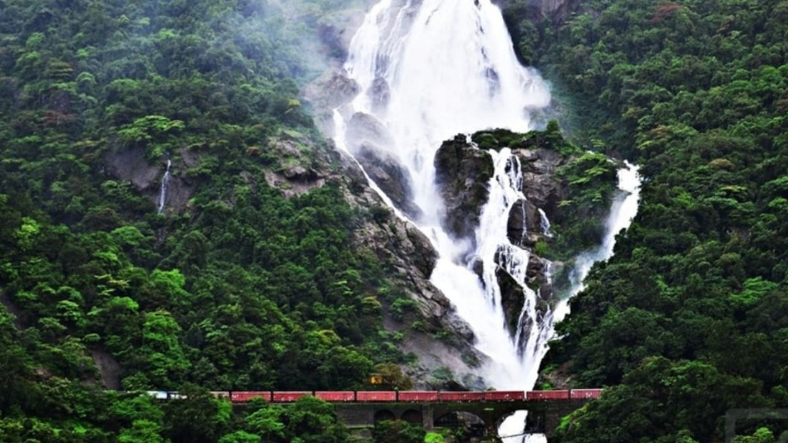

BEST PLACES TO Travel
SOME BEST PLACES FOR YOU

Basilica of Bom Jesus
The Basilica of Bom Jesus Church located in Goa is one of a kind in India and is known for its exemplary baroque architecture. Built in 1594 and consecrated in 1605, the building of this church coincides with the beginning of Christianity in India.

Calangute Beach
Situated 15 km from Panjim, Calangute Beach is the longest beach in North Goa, stretching from Candolim to Baga. Due to its sheer size and popularity, it is a hub for tourists and backpackers from all over the world.

Dudhsagar Falls
One of India's tallest waterfalls, the Dudhsagar Falls is located inside the Mollem National Park. The majestic falls are a little farther inland approximately 60 km from Panaji on the Goa - Karnataka Border. Literally translating to Sea of Milk , the 310 m high waterfall is divided into four tiers on the Mandovi river and resemble a heavy rush of milk flowing effortlessly down the hill.